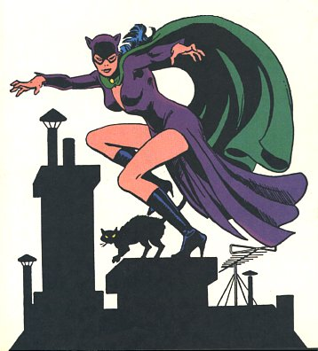
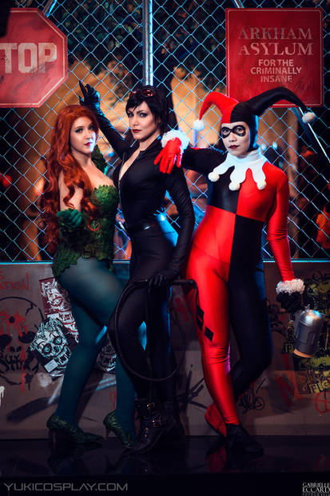
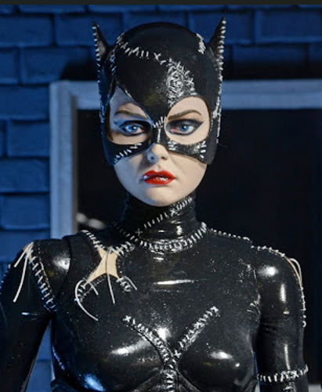

Mais que Nove Vidas
Selina Kyle nem sempre usou couro! Em sua primeira aparição em 1940, ela era chamada apenas de "A Gata" e roubava joias disfarçada de senhora idosa. Ela foi criada por Bill Finger e Bob Kane.

Selina Kyle nem sempre usou couro! Em sua primeira aparição em 1940, ela era chamada apenas de "A Gata" e roubava joias disfarçada de senhora idosa. Ela foi criada por Bill Finger e Bob Kane.

Nem só de Batman vive Selina. Conheça as Sereias de Gotham, o trio mais caótico e perigoso formado por ningém mais, ninguém menos que: Mulher-Gato, Hera Venenosa e Harley Quinn.
O romance mais complexo de Gotham. De inimigos a amantes, Selina e Bruce vivem uma eterna dança entre a lei e o crime. Essa paixão é o equilíbrio perfeito entre luz e sombra.

Você sabia? O traje de 1992 era tão justo que Michelle Pfeiffer precisava de talco para entrar nele e o ar era retirado a vácuo para criar o efeito de 'segunda pele'.